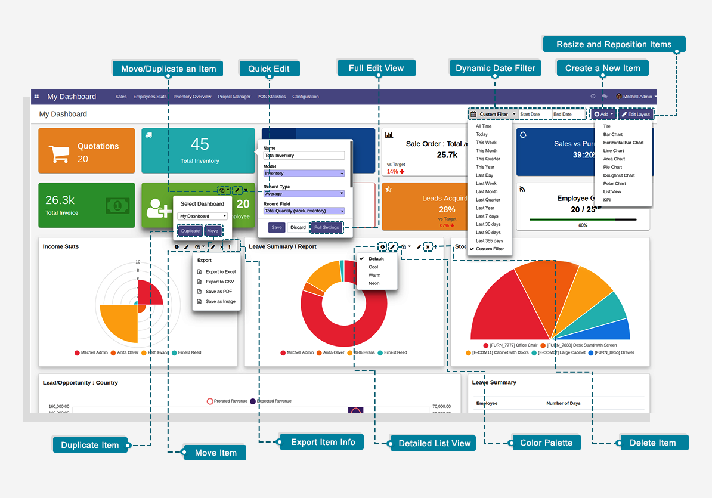

Dashboard Ninja
Dashboard Ninja helps create beautiful, customized and robust dashboards for your different departments. With this easy to use app, you will be able to save your precious business hours and take major business decisions quickly by overseeing important stats on your self-configured dashboards.
Pre-configured Dashboard Ninja Apps
Dashboard Ninja is a base app that allow you to create dashboard of any odoo business model. We are also providing some free apps with pre-configured dashboard, that are listed below.
- POS Dashboard Ninja FREE
- Sales Dashboard Ninja FREE
- Inventory Dashboard Ninja FREE
- Account Dashboard Ninja FREE
- CRM Dashboard Ninja FREE
- Dashboard Screen 
Key Features
-
Fully configurable Dynamic Dashboards with animated charts

-
8 Chart Types supported Tile, Line chart, Bar chart(Stacked, Vertical, Horizontal), Pie chart(Semi/Full), Doughnut chart, Area chart, Polar Area chart, List view
-
Full Configuration of Tiles - (predefined font awesome icons or upload your icon), font color, background color, 6 predefined layouts, size
-
Target feature provided to set targets as line/bar on Bar Chart, Area Chart, Line Chart, & Horizontal Chart
-
Auto refresh dashboard data after configured period of time (None, 15 sec, 30 sec, 45 sec, 1 min, 2 min, 5 min, 10 min)
-
Click info icon on charts or section of charts to view details in list view
-
Multi Company support
-
New Dashboard Item type - KPI card with comparison to Target & Previous period
-
Option on KPI tiles for Comparison of two query in Sum, Ratio or Percentage
-
New Axis for line chart if used with Bar chart
-
Configuration menu provided to create multiple dashboards under any Menu supporting Odoo’s default Access permissions
-
Configure Dashboard Items easily using Quick Edit Mode
-
Easy configuration of items using Odoo models, fields, domains.
-
Responsive design for Desktop, Tablet, and Mobile phones
-
Limit your records to see limited records in any dashboard items like Top 10 products etc
-
3 predefined dashboard layout templates provided during creation of a new dashboard
- Ability to change the color scheme for charts easily
- 20 Date filter options provided like Last 7 Days, Last 30 Days, Last 90 Days, Last 365 Days, This Month, This year, Custom Dates etc
- Move or duplicate your dashboard item within the same or another dashboard
- Export and Import complete dashboards between different databases
- Export any chart item as Excel, CSV, PDF, PNG
- Line Measure option that will show line in bar chart
- Two list view types: Grouped, Ungrouped
- Filter logged in user data using %UID in domain filter
- Available for Community and Enterprise Edition in versions 10, 11, 12, 13
Installation
1. Copy and paste it to your Add-ons folder.
2. Click on Update Apps list from the menu and now Dashboard Ninja will appear in App list.
3. Go to Apps menu, search for 'dashboard ninja' and click Install button.
4. You are ready for use Dashboard Ninja.
Add a Dashboard Item
Creating a Dashboard Item as a Tile:
If you select the Dashboard Item Type as a Tile, pop screen or a dashboard item creation window appears which asks you to fill a number of fields. The ones highlighted in purple are mandatory to fill, model field is the important one in order to save the dashboard item. Once the Model is selected, you will notice two configurations further namely Data and Display. Data tab will allow users to add/select the data for which they wish to display, whereas Display tab will allow a user to configure the dashboard item on the basis of its color, layout etc.
Once the Model is selected, you can define the Domain for the dashboard item if you wish to do the same. For Example: If your selected Model is Sale Order, you can define the Domain as Sale Order where the total amount is greater than 100.
Once you click on the “Display” tab, you will notice the following configuration options
Select the Theme as per your choice. If you wish to choose your own color, you can do the same through Background Color. You can even change the Transparency of the chosen color, you can also change the Font Color of the dashboard item and adjust its Transparency as per your choice.
Choose the icon for your dashboard item. If you wish to choose from our Default Icons, choose the Default Icons option and if you wish to upload your own, choose Upload Icon option.
If you have chosen the Default Icons option, the below pop-up window will be displayed. Choose the icon you like and if you wish to explore more icons, search them in the search bar.
See the Preview of your finished dashboard item. If you like what you see, proceed to save the same.
| Category | Label | Description | Condition | |||
|---|---|---|---|---|---|---|
| General | Name | Label which will be displayed on the tile | ||||
| Model | Select the model/table on which you want to create your item | |||||
| Company | Display tile to particular company | |||||
| Type | Select the type as Tile | |||||
| Preview | Live Preview of the Tile | |||||
| Data | Record Type | Allows you to show your data/record as a Count, Sum or Average | ||||
| Record Field | Allow you to select the field on which to apply the sum or average operation | It will only visible when Record Type is Sum or Average | ||||
| Record Value | Display exact value depending upon selected Record Type and Record Field | |||||
| Domain | Allow you to add conditions to filter out your Data | This odoo default widget is only availabel in Odoo 11, 12 version. Odoo 10 customer will need technical knowledge to add conditions. | ||||
| Date Filter Field | Field on which date filter will work | Only date fields will be displayed | ||||
| Date Filter Selection | Select the Date filter for which you want to filter out the your item records/data | If None option is selected then only Main Dashboard page date filter will work. | ||||
| Start Date | Option to set start date for custom date filter | Only visible when Date filter selection is set to Custom Filter | ||||
| End Date | Option to set end date for custom date filter | Only visible when Date filter selection is set to Custom Filter | ||||
| Display | Theme | Pre configured set of 5 different colors i.e White, Blue, Green, Red and Yellow. Select the Theme as per your choice | Get overridens if custom values are set in Background Color, Font Color & Icon Color | |||
| Background Color | Allows you to set the background color from a color pop-up window. Also provides option to set transparency. | |||||
| Font Color | Allows you to set the font color from a color pop-up window. Also provides option to set transparency. | |||||
| Icon Option |
|
|
||||
| Icon | We have provided 29 pre-loaded Default Font Awesome 4.7.0 icons | Use search bar to search for other available Font Awesome icons. | ||||
| Icon Color | Allows you to choose the color of the icon. Also, provides option to set transparency. | Only visible when Icon Option chosen as Default |
Creating a Dashboard Item as a Bar Chart:
For example: Let’s select the Model as Sales Order and keep its Measures as Total (sale.order), Taxes (sale.order) and Untaxed Amount(sale.order) and Line Measure as Taxes (sale.order) and Untaxed Amount (sale.order) and Currency Rate (sale.order)
Measures and Line Measure will show list of fields related to the chosen model on the basis of following attributes:
Once you select the Data Type as Sum, Count or Average, it will start displaying the data respectively.
Select the Sub Group By field to further group your Group By field data, for example: let’s select the Group By as Company (sale.order).
You can also select the Sort By Field, Sort Order, and Record Limit option specific to the dashboard item you’re currently making
You also have the feature of defining the Chart Color Palette for your dashboard item under Display tab, there are four predefined options i.e. Default, Cool, Warm and Neon.
The same can also be defined from the main dashboard by clicking at the brush icon named Color Palette on each individual dashboard item whose type is charts.
If you input the value for “Standard Target” option, then you will be able to view your Data target as per the input the value, as shown above screenshot.
If you wish to see the target with different data and date range, then you need to add them by clicking on “Add Line”. on clicking the Add Line, you will be asked to select the Date and the value for which you want to see the target.
You can add multiple lines to see the target values as per your need.
Once all the mandatory details are filled, you can preview your dashboard item in the Preview column and if everything looks good, then proceed to save.
| Category | Label | Description | Condition |
|---|---|---|---|
| General | Name | Label which will be displayed on header of item | |
| Model | Select the model/table on which you want to create your item | ||
| Company | Display Bar Chart to particular company | ||
| Type | Select the type as Bar Chart | ||
| Stacked Bar Chart | Option to convert bar chart in stacked bar chart | ||
| Preview | Live Preview of the Bar Chart | ||
| Data | Measures | Allows you to select the fields for which you want to perform the calculations as per the selected Model | Only visible when Data type is Sum or Average |
| Line Measure | Allows you to select the fields for which you want to display lines on bar chart | Only visible when Data type is Sum or Average | |
| Data Type | Allows you to display your data as Sum, Count or Average | ||
| Group By | Allows you to group your selected Measure fields data | Enables Target tab if Date/Datetime field is selected | |
| Group By Date | Allows you to select the date option by which you wish to group the data as per selected date type group by field. Options are Day, Week, Month, Quarter, Year. | Only visible when date/datetime field is chosen in Group By | |
| Sub Group By | Allows you to further group your Group By field data. | Only visible when date/datetime field is chosen in Sub Group By | |
| Sub Group By Date | Allows you to select the date option by which you wish to group the grouped data as per selected date type sub group by field. Options are Day, Week, Month, Quarter, Year. | It will only visible when Sub Group By is chosen date time field | |
| Sort By Field | It will allow you to select the field on which you want to sort the records/Data | ||
| Sort Order | Allows you to sort your data in Ascending or Descending order | ||
| Record Limit | Allows you to set limit to your records/data | ||
| Domain | Allows you to add conditions to filter out your Data | This odoo default widget is only availabel in Odoo 11, 12 version. Odoo 10 customer will need technical knowledge to add conditions. | |
| Date Filter Field | Field on which date filter will work | Only date fields will be displayed | |
| Date Filter Selection | Select the Date filter for which you want to filter out the your item records/data | If None option is selected then only Main Dashboard page date filter will work. | |
| Start Date | Option to set start date for custom date filter | Only visible when Date filter selection is set to Custom Filter | |
| End Date | Option to set end date for custom date filter | Only visible when Date filter selection is set to Custom Filter | |
| Display | Chart Color Palette | It will allow you to select the color from 4 pre-defined options i.e Default, Cool, Warm and Neon | |
| Target | Enable Target | On enabiling the option, you will be able to see the Target values | Target tab is only visible when Date/Datetime field is selected in Group By |
| Show Target as Line | Allows you to set your target values which you wish to see as a line on chart. | Visible only when you enables the Enable Target | |
| Standard Target | Default target value if any value is empty for particular date period | ||
| Date | Allows you to set the Date on which you wish to see your Target values. | Visible only when you check the Enable Target option | |
| Value | Allows you to set the Target value respective to the date. | Visible only when you check the Enable Target option |
Creating a Dashboard Item as a Horizontal Bar Chart:
| Category | Label | Description | Condition |
|---|---|---|---|
| General | Name | Label which will be displayed on header of item | |
| Model | Select the model/table on which you want to create your item | ||
| Company | Display Horizontal Bar Chart to particular company | ||
| Type | Select the type as Horizontal Bar Chart | ||
| Stacked Bar Chart | Option to convert Horizontal Bar Chart in stacked bar chart | ||
| Preview | Live Preview of the Horizontal Bar Chart | ||
| Data | Measures | Allows you to select the fields for which you want to perform the calculations as per the selected Model | Only visible when Data type is Sum or Average |
| Line Measure | Allows you to select the fields for which you want to display lines on bar chart | Only visible when Data type is Sum or Average | |
| Data Type | Allows you to display your data as Sum, Count or Average | ||
| Group By | Allows you to group your selected Measure fields data | Enables Target tab if Date/Datetime field is selected | |
| Group By Date | Allows you to select the date option by which you wish to group the data as per selected date type group by field. Options are Day, Week, Month, Quarter, Year. | Only visible when date/datetime field is chosen in Group By | |
| Sub Group By | Allows you to further group your Group By field data. | Only visible when date/datetime field is chosen in Sub Group By | |
| Sub Group By Date | Allows you to select the date option by which you wish to group the grouped data as per selected date type sub group by field. Options are Day, Week, Month, Quarter, Year. | It will only visible when Sub Group By is chosen date time field | |
| Sort By Field | It will allow you to select the field on which you want to sort the records/Data | ||
| Sort Order | Allows you to sort your data in Ascending or Descending order | ||
| Record Limit | Allows you to set limit to your records/data | ||
| Domain | Allows you to add conditions to filter out your Data | This odoo default widget is only availabel in Odoo 11, 12 version. Odoo 10 customer will need technical knowledge to add conditions. | |
| Date Filter Field | Field on which date filter will work | Only date fields will be displayed | |
| Date Filter Selection | Select the Date filter for which you want to filter out the your item records/data | If None option is selected then only Main Dashboard page date filter will work. | |
| Start Date | Option to set start date for custom date filter | Only visible when Date filter selection is set to Custom Filter | |
| End Date | Option to set end date for custom date filter | Only visible when Date filter selection is set to Custom Filter | |
| Display | Chart Color Palette | It will allow you to select the color from 4 pre-defined options i.e Default, Cool, Warm and Neon | |
| Target | Enable Target | On enabiling the option, you will be able to see the Target values | Target tab is only visible when Date/Datetime field is selected in Group By |
| Show Target as Line | Allows you to set your target values which you wish to see as a line on chart. | Visible only when you enables the Enable Target | |
| Standard Target | Default target value if any value is empty for particular date period | ||
| Date | Allows you to set the Date on which you wish to see your Target values. | Visible only when you check the Enable Target option | |
| Value | Allows you to set the Target value respective to the date. | Visible only when you check the Enable Target option |
Creating a Dashboard Item as a Line Chart:
| Category | Label | Description | Condition |
|---|---|---|---|
| General | Name | Label which will be displayed on header of item | |
| Model | Select the model/table on which you want to create your item | ||
| Company | Display Line Chart to particular company | ||
| Type | Select the type as Line Chart | ||
| Preview | Live Preview of the Line Chart | ||
| Data | Measures | Allows you to select the fields for which you want to perform the calculations as per the selected Model | Only visible when Data type is Sum or Average |
| Data Type | Allows you to display your data as Sum, Count or Average | ||
| Group By | Allows you to group your selected Measure fields data | Enables Target tab if Date/Datetime field is selected | |
| Group By Date | Allows you to select the date option by which you wish to group the data as per selected date type group by field. Options are Day, Week, Month, Quarter, Year. | Only visible when date/datetime field is chosen in Group By | |
| Sub Group By | Allows you to further group your Group By field data. | Only visible when date/datetime field is chosen in Sub Group By | |
| Sub Group By Date | Allows you to select the date option by which you wish to group the grouped data as per selected date type sub group by field. Options are Day, Week, Month, Quarter, Year. | It will only visible when Sub Group By is chosen date time field | |
| Sort By Field | It will allow you to select the field on which you want to sort the records/Data | ||
| Sort Order | Allows you to sort your data in Ascending or Descending order | ||
| Record Limit | Allows you to set limit to your records/data | ||
| Domain | Allows you to add conditions to filter out your Data | This odoo default widget is only availabel in Odoo 11, 12 version. Odoo 10 customer will need technical knowledge to add conditions. | |
| Date Filter Field | Field on which date filter will work | Only date fields will be displayed | |
| Date Filter Selection | Select the Date filter for which you want to filter out the your item records/data | If None option is selected then only Main Dashboard page date filter will work. | |
| Start Date | Option to set start date for custom date filter | Only visible when Date filter selection is set to Custom Filter | |
| End Date | Option to set end date for custom date filter | Only visible when Date filter selection is set to Custom Filter | |
| Display | Chart Color Palette | It will allow you to select the color from 4 pre-defined options i.e Default, Cool, Warm and Neon | |
| Target | Enable Target | On enabiling the option, you will be able to see the Target values | Target tab is only visible when Date/Datetime field is selected in Group By |
| Standard Target | Default target value if any value is empty for particular date period | ||
| Date | Allows you to set the Date on which you wish to see your Target values. | Visible only when you check the Enable Target option | |
| Value | Allows you to set the Target value respective to the date. | Visible only when you check the Enable Target option |
Creating a Dashboard Item as an Area Chart:
| Category | Label | Description | Condition |
|---|---|---|---|
| General | Name | Label which will be displayed on header of item | |
| Model | Select the model/table on which you want to create your item | ||
| Company | Display Area Chart to particular company | ||
| Type | Select the type as Area Chart | ||
| Preview | Live Preview of the Area Chart | ||
| Data | Measures | Allows you to select the fields for which you want to perform the calculations as per the selected Model | Only visible when Data type is Sum or Average |
| Data Type | Allows you to display your data as Sum, Count or Average | ||
| Group By | Allows you to group your selected Measure fields data | Enables Target tab if Date/Datetime field is selected | |
| Group By Date | Allows you to select the date option by which you wish to group the data as per selected date type group by field. Options are Day, Week, Month, Quarter, Year. | Only visible when date/datetime field is chosen in Group By | |
| Sub Group By | Allows you to further group your Group By field data. | Only visible when date/datetime field is chosen in Sub Group By | |
| Sub Group By Date | Allows you to select the date option by which you wish to group the grouped data as per selected date type sub group by field. Options are Day, Week, Month, Quarter, Year. | It will only visible when Sub Group By is chosen date time field | |
| Sort By Field | It will allow you to select the field on which you want to sort the records/Data | ||
| Sort Order | Allows you to sort your data in Ascending or Descending order | ||
| Record Limit | Allows you to set limit to your records/data | ||
| Domain | Allows you to add conditions to filter out your Data | This odoo default widget is only availabel in Odoo 11, 12 version. Odoo 10 customer will need technical knowledge to add conditions. | |
| Date Filter Field | Field on which date filter will work | Only date fields will be displayed | |
| Date Filter Selection | Select the Date filter for which you want to filter out the your item records/data | If None option is selected then only Main Dashboard page date filter will work. | |
| Start Date | Option to set start date for custom date filter | Only visible when Date filter selection is set to Custom Filter | |
| End Date | Option to set end date for custom date filter | Only visible when Date filter selection is set to Custom Filter | |
| Display | Chart Color Palette | It will allow you to select the color from 4 pre-defined options i.e Default, Cool, Warm and Neon | |
| Target | Enable Target | On enabiling the option, you will be able to see the Target values | Target tab is only visible when Date/Datetime field is selected in Group By |
| Standard Target | Default target value if any value is empty for particular date period | ||
| Date | Allows you to set the Date on which you wish to see your Target values. | Visible only when you check the Enable Target option | |
| Value | Allows you to set the Target value respective to the date. | Visible only when you check the Enable Target option |
Creating a Dashboard Item as a Pie Chart:
You will notice one additional feature, Semi Circle Chart checkbox which converts Pie Chart in Semi Pie Chart.
This is how Semi-Pie Chart look like:
| Category | Label | Description | Condition |
|---|---|---|---|
| General | Name | Label which will be displayed on header of item | |
| Model | Select the model/table on which you want to create your item | ||
| Company | Display Pie Chart to particular company | ||
| Type | Select the type as Pie Chart | ||
| Semi Circle Chart | Option to convert Pie Chart in Semi Pie Chart | ||
| Preview | Live Preview of the Pie Chart | ||
| Data | Measures | Allows you to select the fields for which you want to perform the calculations as per the selected Model | Only visible when Data type is Sum or Average |
| Data Type | Allows you to display your data as Sum, Count or Average | ||
| Group By | Allows you to group your selected Measure fields data | Enables Target tab if Date/Datetime field is selected | |
| Group By Date | Allows you to select the date option by which you wish to group the data as per selected date type group by field. Options are Day, Week, Month, Quarter, Year. | Only visible when date/datetime field is chosen in Group By | |
| Sub Group By | Allows you to further group your Group By field data. | Only visible when date/datetime field is chosen in Sub Group By | |
| Sub Group By Date | Allows you to select the date option by which you wish to group the grouped data as per selected date type sub group by field. Options are Day, Week, Month, Quarter, Year. | It will only visible when Sub Group By is chosen date time field | |
| Sort By Field | It will allow you to select the field on which you want to sort the records/Data | ||
| Sort Order | Allows you to sort your data in Ascending or Descending order | ||
| Record Limit | Allows you to set limit to your records/data | ||
| Domain | Allows you to add conditions to filter out your Data | This odoo default widget is only availabel in Odoo 11, 12 version. Odoo 10 customer will need technical knowledge to add conditions. | |
| Date Filter Field | Field on which date filter will work | Only date fields will be displayed | |
| Date Filter Selection | Select the Date filter for which you want to filter out the your item records/data | If None option is selected then only Main Dashboard page date filter will work. | |
| Start Date | Option to set start date for custom date filter | Only visible when Date filter selection is set to Custom Filter | |
| End Date | Option to set end date for custom date filter | Only visible when Date filter selection is set to Custom Filter | |
| Display | Chart Color Palette | It will allow you to select the color from 4 pre-defined options i.e Default, Cool, Warm and Neon |
Creating a Dashboard Item as a Doughnut Chart:
You will notice one additional feature, Semi Circle Chart checkbox which converts Doughnut Chart in Semi Doughnut Chart.
This is how Semi-Doughnut Chart look like:

| Category | Label | Description | Condition |
|---|---|---|---|
| General | Name | Label which will be displayed on header of item | |
| Model | Select the model/table on which you want to create your item | ||
| Company | Display Doughnut Chart to particular company | ||
| Type | Select the type as Doughnut Chart | ||
| Semi Circle Chart | Option to convert Doughnut Chart in Semi Doughnut Chart | ||
| Preview | Live Preview of the Doughnut Chart | ||
| Data | Measures | Allows you to select the fields for which you want to perform the calculations as per the selected Model | Only visible when Data type is Sum or Average |
| Data Type | Allows you to display your data as Sum, Count or Average | ||
| Group By | Allows you to group your selected Measure fields data | Enables Target tab if Date/Datetime field is selected | |
| Group By Date | Allows you to select the date option by which you wish to group the data as per selected date type group by field. Options are Day, Week, Month, Quarter, Year. | Only visible when date/datetime field is chosen in Group By | |
| Sub Group By | Allows you to further group your Group By field data. | Only visible when date/datetime field is chosen in Sub Group By | |
| Sub Group By Date | Allows you to select the date option by which you wish to group the grouped data as per selected date type sub group by field. Options are Day, Week, Month, Quarter, Year. | It will only visible when Sub Group By is chosen date time field | |
| Sort By Field | It will allow you to select the field on which you want to sort the records/Data | ||
| Sort Order | Allows you to sort your data in Ascending or Descending order | ||
| Record Limit | Allows you to set limit to your records/data | ||
| Domain | Allows you to add conditions to filter out your Data | This odoo default widget is only availabel in Odoo 11, 12 version. Odoo 10 customer will need technical knowledge to add conditions. | |
| Date Filter Field | Field on which date filter will work | Only date fields will be displayed | |
| Date Filter Selection | Select the Date filter for which you want to filter out the your item records/data | If None option is selected then only Main Dashboard page date filter will work. | |
| Start Date | Option to set start date for custom date filter | Only visible when Date filter selection is set to Custom Filter | |
| End Date | Option to set end date for custom date filter | Only visible when Date filter selection is set to Custom Filter | |
| Display | Chart Color Palette | It will allow you to select the color from 4 pre-defined options i.e Default, Cool, Warm and Neon |
Creating a Dashboard Item as a Polar Area Chart:
| Category | Label | Description | Condition |
|---|---|---|---|
| General | Name | Label which will be displayed on header of item | |
| Model | Select the model/table on which you want to create your item | ||
| Company | Display Polar Area Chart to particular company | ||
| Type | Select the type as Polar Area Chart | ||
| Preview | Live Preview of the Polar Area Chart | ||
| Data | Measures | Allows you to select the fields for which you want to perform the calculations as per the selected Model | Only visible when Data type is Sum or Average |
| Data Type | Allows you to display your data as Sum, Count or Average | ||
| Group By | Allows you to group your selected Measure fields data | Enables Target tab if Date/Datetime field is selected | |
| Group By Date | Allows you to select the date option by which you wish to group the data as per selected date type group by field. Options are Day, Week, Month, Quarter, Year. | Only visible when date/datetime field is chosen in Group By | |
| Sub Group By | Allows you to further group your Group By field data. | Only visible when date/datetime field is chosen in Sub Group By | |
| Sub Group By Date | Allows you to select the date option by which you wish to group the grouped data as per selected date type sub group by field. Options are Day, Week, Month, Quarter, Year. | It will only visible when Sub Group By is chosen date time field | |
| Sort By Field | It will allow you to select the field on which you want to sort the records/Data | ||
| Sort Order | Allows you to sort your data in Ascending or Descending order | ||
| Record Limit | Allows you to set limit to your records/data | ||
| Domain | Allows you to add conditions to filter out your Data | This odoo default widget is only availabel in Odoo 11, 12 version. Odoo 10 customer will need technical knowledge to add conditions. | |
| Date Filter Field | Field on which date filter will work | Only date fields will be displayed | |
| Date Filter Selection | Select the Date filter for which you want to filter out the your item records/data | If None option is selected then only Main Dashboard page date filter will work. | |
| Start Date | Option to set start date for custom date filter | Only visible when Date filter selection is set to Custom Filter | |
| End Date | Option to set end date for custom date filter | Only visible when Date filter selection is set to Custom Filter | |
| Display | Chart Color Palette | It will allow you to select the color from 4 pre-defined options i.e Default, Cool, Warm and Neon |
Creating a Dashboard Item as a List View:
| Category | Label | Description | Condition |
|---|---|---|---|
| General | Name | Label which will be displayed on header of item | |
| Model | Select the model/table on which you want to create your item | ||
| Company | Display List View to particular company | ||
| Type | Select the type as List View | ||
| Preview | Live Preview of the List View | ||
| Data | List View Type | Allows you to Grouped or Un-Grouped your data with respect to chosen Model | |
| Fields to show in List | Allows you to select the fileds for which you want to perform the calculations as per the selected Model | ||
| Group By | Allows you to group your selected Measure fields data | Enables Target tab if Date/Datetime field is selected | |
| Group By Date | Allows you to select the date option by which you wish to group the data as per selected date type group by field. Options are Day, Week, Month, Quarter, Year. | Only visible when date/datetime field is chosen in Group By | |
| Sort By Field | It will allow you to select the field on which you want to sort the records/Data | ||
| Sort Order | Allows you to sort your data in Ascending or Descending order | ||
| Record Limit | Allows you to set limit to your records/data | ||
| Domain | Allows you to add conditions to filter out your Data | This odoo default widget is only availabel in Odoo 11, 12 version. Odoo 10 customer will need technical knowledge to add conditions. | |
| Date Filter Field | Field on which date filter will work | Only date fields will be displayed | |
| Date Filter Selection | Select the Date filter for which you want to filter out the your item records/data | If None option is selected then only Main Dashboard page date filter will work. | |
| Start Date | Option to set start date for custom date filter | Only visible when Date filter selection is set to Custom Filter | |
| End Date | Option to set end date for custom date filter | Only visible when Date filter selection is set to Custom Filter |
Creating a Dashboard Item as a KPI:
You can create some amazing KPI with below comparsion options:
You also get a option of additional query using which you can perform different operation using "Data Calculation" field on two result sets along with Target comparison:
Under Target Tab, you will get option to see target value as Number or Progressbar like described in below screenshot:

| Category | Label | Description | Condition | |||
|---|---|---|---|---|---|---|
| General | Name | Label which will be displayed on the tile | ||||
| Model | Select the model/table on which you want to create your item | |||||
| Company | Display KPI to particular company | |||||
| Type | Select the type as KPI | |||||
| Preview | Live Preview of the KPI | |||||
| Data | Record Type | Allows you to show your data/record as a Count, Sum or Average | ||||
| Record Field | Allow you to select the field on which to apply the sum or average operation | It will only visible when Record Type is Sum or Average | ||||
| Record Value | Display exact value depending upon selected Record Type and Record Field | |||||
| Previous Period | Show/Hide previous period value | |||||
| Domain | Allow you to add conditions to filter out your Data | This odoo default widget is only availabel in Odoo 11, 12 version. Odoo 10 customer will need technical knowledge to add conditions. | ||||
| Date Filter Field | Field on which date filter will work | Only date fields will be displayed | ||||
| Date Filter Selection | Select the Date filter for which you want to filter out the your item records/data | If None option is selected then only Main Dashboard page date filter will work. | ||||
| Start Date | Option to set start date for custom date filter | Only visible when Date filter selection is set to Custom Filter | ||||
| End Date | Option to set end date for custom date filter | Only visible when Date filter selection is set to Custom Filter | ||||
| Data #2 | Model | Select the model/table on which you want to create your item | ||||
| Record Type | Allows you to show your data/record as a Count, Sum or Average | |||||
| Record Field | Allow you to select the field on which to apply the sum or average operation | It will only visible when Record Type is Sum or Average | ||||
| Data Calculation | 4 options for the calculation of Data and Data #2 result set. Options are None, Sum, Ratio, Percentage. | Target value displays only when Sum and Percentage is selected | ||||
| Domain | Allow you to add conditions to filter out your Data | This odoo default widget is only availabel in Odoo 11, 12 version. Odoo 10 customer will need technical knowledge to add conditions. | ||||
| Date Filter Field | Field on which date filter will work | Only date fields will be displayed | ||||
| Date Filter Selection | Select the Date filter for which you want to filter out the your item records/data | If None option is selected then only Main Dashboard page date filter will work. | ||||
| Start Date | Option to set start date for custom date filter | Only visible when Date filter selection is set to Custom Filter | ||||
| End Date | Option to set end date for custom date filter | Only visible when Date filter selection is set to Custom Filter | ||||
| Display | Theme | Pre configured set of 5 different colors i.e White, Blue, Green, Red and Yellow. Select the Theme as per your choice | Get overridens if custom values are set in Background Color, Font Color & Icon Color | |||
| Background Color | Allows you to set the background color from a color pop-up window. Also provides option to set transparency. | |||||
| Font Color | Allows you to set the font color from a color pop-up window. Also provides option to set transparency. | |||||
| Icon Option |
|
|
||||
| Icon | We have provided 29 pre-loaded Default Font Awesome 4.7.0 icons | Use search bar to search for other available Font Awesome icons. | ||||
| Icon Color | Allows you to choose the color of the icon. Also, provides option to set transparency. | Only visible when Icon Option chosen as Default | ||||
| Target | Enable Target | Show/Hide target value | ||||
| Standard Target | Target value to be compared | |||||
| View | Allows you to display target value either in number or in progressbar |
Additional Features:
1. Move and Duplicate a Dashboard Item:
You can Duplicate or Move any dashboard item from one dashboard to another or within same dashboard by two ways:
1. Copy icon on item visible on mouseover as described in below screenshot:
2. Action dropdown with option to Duplicate or Move in Add/Edit screen after item is saved. Clicking the same will reveal two drop-down options to either Duplicate the dashboard item or Move the dashboard item.
Selecting either of the options will open the Dashboard Item Action pop-up. Proceed by selecting the Action you want to execute i.e. Duplicate and Move, and the destination Dashboard.
The Duplicate Action will duplicate the dashboard item from one dashboard to another or same dashboard.
The Move Action will move the dashboard item from one dashboard to another dashboard or same dashboard.
2. Resize the Dashboard Item
You can resize the dashboard items by clicking on the Edit Layout button from the top right corner of the Dashboard screen by dragging the same horizontally or vertically from their corners as per your need.
Note: Tiles can only be resized horizontally.

3. List View for Charts/Tile Data:
1. Charts - Click on the info icon present on top right of charts to view the details/list view of charts data, you can even click on charts sections of filter out particular chart data.
2. Tiles - Click on the tile to see details/list view of the data.
4. Export & Import complete dashboard between different Databases (Admin Access Only)
Steps to Export Dashboard
1. Login with admin account
2. Go to menu : My Dashboard > Configuration > Dashboards
3. Select the dashboard record which you want to export
4. Select "Export Dashboard" option from 'Actions' dropdown
5. A JSON file will be downloaded with name 'dashboard_ninja.json'.
Steps to Import Dashboard
1. Login with admin account
2. Go to menu : My Dashboard > Configuration > Dashboards
3. Click on 'Import Dashboard' button
4. Select the JSON (dashboard_ninja.json) file exported previously
5. Dashboard will be imported successfully and you can see in list view of Dashboards
5. Use of %UID in domain filter to filter logged in User Data
If you want to see data of logged In user for particular item, follow below steps:
1. Go to edit screen for particular dashboard item
2. Click on 'Domain Filter'
3. In value field, use %UID
4. Click Save
6. Auto Refresh
Auto refresh feature allows your data to render automatically after configured period of time. You can set the Auto Refresh timer from the Configuration > Dashboards menu available as per your need: None, 15 sec, 30 sec, 45 sec, 1 min, 2 min, 5 min, 10 min.
7. Target Comparison
User can define the target values for the model which they wish to see the comparison.
NOTE: Target Comparison is possible for below listed Dashboard items
1. Line Chart
2. Bar Chart
3. Horizontal Bar Chart
4. Area Chart
5. KPI
If you click on Target tab, you will be able to see the Enable Target option on activating it, you will notice the new configurations menus to set the Targets for your data as per your need.
If you input the value for “Standard Target” option, then you will be able to view your Data target as per the input the value, as shown above screenshot.
If you wish to see the target with different data and date range, then you need to add them by clicking on “Add Line”. on clicking the Add Line, you will be asked to select the Date and the value for which you want to see the target.
You can add multiple lines to see the target values as per your need.
8. Quick Edit Mode
You can easily configure you dashboard on the fly from the Dashboard Screen itself for some important configurations, as shown below
9. Ability to Edit the Parent Menu of the Dashboard
This features provides you an ease to change parent menu of a particular Dashboard even after initial creation of the Dashboard.
10. Dynamic Date Filter Range
Total 15 Date Filter options are provided to filter out your data as per your need.
11. Remove the Dashboard Item
You can easily remove the dashboard item by clicking on the remove item button from the dashboard item itself.
12. Color Palette
This feature allows a user to change dashboard item’s color on the fly from the dashboard item itself.

Dashboard Ninja Configurations
You can configure your Dashboards from the My Dashboards > Configuration > Dashboards menu as shown below:
On clicking the Dashboards menu, you will be able to see the below screen:
You can activate and deactivate a customized dashboard by checking and unchecking the box respectively
While creating a dashboard, you will have the option of selecting the dashboard layout from 3 Pre-defined layout templates and Preconfigured Sales Dashboard.
If you want your dashboard data to get auto refreshed after some interval, set value for 'Update Inverval' for particular dashboard.
Group Access option allows us to set groups permission who can access the selected dashboard.
Dashboard Ninja Advance Features
1. TV Dashboard
The Dashboard Ninja Advance has come up with a TV Dashboard feature to display your curated dashboards on the TV screens. Go to ‘’My dashboard’’ section, and click on the ‘’Play’’ button at the top right corner of the page as displayed below:
With this feature, you can get the complete view of the listed items in the slide view format, with every slide showing the detail of every item.
Display Complex Analytics
2. Create/Edit query on your own
In the Dashboard Ninja Advance, you can create an item using SQL query thus allowing their users to create dashboard items with more complex data. For example, users can create dashboard items to show data from computation of different odoo model fields or to show data from multiple odoo models in one item. You can create the following 8 items by SQL query: Bar chart, Horizontal bar chart, Doughnut chart, Pie chart, Line chart, Area chart, Polar area chart and List view.
2.a. Chart Items using custom queries
Go to the ‘’My Dashboard’’ menu, click on ''Add'' button, select any type of charts from the item list and select the data calculation type as ‘’Query’’. In the Query section, add a custom query as per your requirement.
2.b. List view using custom queries
Go to the ‘’My Dashboard ’menu’, click on ''Add'' button, select the type ‘’List view’’ from the item list and select the data calculation type as ‘’Query’’. In the Query section, add a custom query as per your requirement.
Odoo.Sh Installation Steps
Steps
1. Please commit/push Dashboard Ninja code on GitHub which is associated with odoo.sh.
2. Login to the odoo.sh and click on that branch on which you have commit Dashboard Ninja.
3. Click on the connect button then go to the app search for the Dashboard Ninja app and click on the install button.
Our Releases
Latest Release 8.2.1
■ Fix - Custom date filter issue with the date type field.
■ Minor code changes related to the count data type for chart item.
Release 8.2.0
■ Minor code changes related to date filter field.
■ Improvement - Add default action context in action.
■ Minor code changes related to date type field in the ungrouped list view.
■ Minor Code changes related to the sorting functionality.
Release 8.1.8
■ Minor code fix related to the model field.
Release 8.1.7
■ Minor code changes related to date filter field.
■ Improvement - Add default action context in action.
■ Minor code changes related to date type field in the ungrouped list view.
■ Minor Code changes related to the sorting functionality.
Release 8.1.8
■ Minor code fix related to the model field.
Release 8.1.7
■ Minor code changes related to date filter field.
■ Improvement - Add default action context in action.
■ Minor code changes related to date type field in the ungrouped list view.
■ Minor Code changes related to the sorting functionality.
Release 8.1.8
■ Minor code fix related to the model field.
Release 8.1.7
■ Improvement - Save as image background view in chart items.
■ Fix date filter issue related to the user timezone.
Release 8.1.6
■ Fix - Domain record click issue form the item view.
■ Fix - All-Time date filter changing issue after configure dashboard date filter.
Release 8.1.5
■ Improvement - Update Same Period Previous Years limit from last 10 years to 100 years.
Release 8.1.4
■ Feature - Added Month-Year date filter aggregation in Group by Date..
■ Fix - Minor bug fix related to KPI target.
Release 8.1.3
■ Improvement - Date field data will display in Date format instead of the DateTime format in the Ungrouped List View.
■ Fix - Tile item resize issue after quick customize the Tile item.
■ Feature - Export to Excel in list view item.
■ Feature - Export to CSV in list view item.
■ Feature - Save as PDF in Chart Items.
Release 8.1.2
■ Fix - jsPDF Library issue (removing Save as PDF feature for Chart Items).
Release 8.1.1
■ Minor code changes in list view drill down feature.
Release 8.1.0
■ Fix - Fixed UI Issues for Right-To-Left(RTL) Languages.
Release 8.0.0
■ Feature - Optimization of code decreasing loading time.
■ Feature - Added New date filters (Past Till Now, Past Excluding Today, Future Starting Now, Future Starting Tomorrow).
■ Feature - Configuration For Hiding and Showing Legends on Chart Items.
■ Feature - Added Fill temporal value.
Release 7.0.6
■ Minor code changes of chart measure field in Quick Edit View.
Release 7.0.5
■ Minor code changes in Quick Edit View.
Release 7.0.4
■ Fix - Allowed Item stretching till max width.
Release 7.0.3
■ Fix - Minor bug fix related to the import item.
Release 7.0.2
■ Minor code changes (added groups name in xml view).
Release 7.0.1
■ Fix - Minor bug fix related the subgroup by.
Release 7.0.0
■ Feature - Drill down feature in grouped list view.
■ Feature - Sorting and record limit in drill down.
■ Feature - Allow users to Include/Compare their data with Previous Years by Same Period Previous Years option of all item.
■ Feature - Use of %MYCOMPANY in domain filter to filter logged in user company data.
■ Feature - Pagination in ungrouped list View.
■ Feature - Option to enable and disable data for items.
■ Feature - Allow user to export and import each item.
■ Improvement - Computed Fields in ungrouped List View.
■ Improvement - Add Drill Up text and increase size of drill up button.
■ Improvement - List view row alternate colors.
■ Fix - Minor bug of color picker for compatibility with List View Manager.
Release 6.3.5
■ Fix - Minor bug of color picker for compatibility with List View Manager.
Release 6.3.4
■ Fix - Minor bug fix related to domain filter.
Release 6.3.3
■ Fix - Minor bug fix related to translation
Release 6.3.2
■ Fix - Minor bug fix related to drill down.
Release 6.3.1
■ Fix - Item position issue when changing company.
■ Fix - Reset item update interval issue when saving layout.
Release 6.3.0
■ Fix - "Send by Email" issue in Safari browser.
Release 6.1.2
■ Fix - Import/export issue for custom field.
Release 6.1.1
■ Feature - Ability to add custom unit and currency symbol on tooltip and legends.
■ Fix - Mobile view issue.
■ Fix - Minor bug related to date filter.
■ Fix - Minor bug related import Dashboard.
Release 6.1.0
■ Feature -Target and deviation in grouped list view item.
■ Fix - Minor bug related to selection field.
Release 6.0.2
■ Fix - Minor code fix related to Datalabels
■ Fix - Minor code fix related to Item Update Interval
Release 6.0.1
■ Fix - Minor code fix related to Grouping on Date Type field use case.
Release 6.0.0
■ Feature - Drill down on Chart Items.
■ Feature - Item Action to open particular view after viewing item information (can select any particular action).
■ Feature - Show Data Value Option for charts items (Data values) to show data values permanently.
■ Enhancement - Date filter show changes on the fly.
■ Enhancement - Show all possible field types in Group By and Subgroup By field selection for items.
■ Feature - Added two more date filter aggregation in Group by Date and Sub Group By Date : Hour and Minute.
■ Enhancement - Now user can set Single Item Refresh Interval instead of Dashboard in item configuration.
■ Feature - Easily re-arrange dashboard menu using Menu Sequence from Dashboard Configuration.
■ Enhancement - Removed the dependency of Sales Module from our app.
■ Enhancement - Now using Odoo default Date-picker in Dashboard Date Custom Filter Selection.
■ Enhancement - Now user can view item list of Dashboard/Dashboards and can delete/move/duplicate group of items at Once using List Action.
■ Feature - Allow users to Include/Compare their data with Previous Period by Include Period option.
■ Feature - Allow users to Include/Compare their data with Previous Years by Same Period Previous Years option.
■ Enhancement - Now user can view Global Target. line on their chart in Sub Group Case when grouped on Date type field.
Release 5.3.2
■ Fix - Tile and Kpi item data calculation with Multi-Company Support.
Release 5.3.1
■ Fix - Added thousand decimal separator on Target and Percentage values of KPI
Release 5.3.0
■ Performance Enhancement - We have skipped the aggregation over computed fields in record field for Tile and KPI item types to increase performance of item loading.
■ 5 new Date Filter options provided : Next Day, Next Week, Next Month, Next Quarter and Next Year.
Release 5.2.0
■ Fix - Dashboard Ninja compatibility issue with Backend Theme where dashboard page was hidden behind app drawer.
■ Fix - Dashboard Ninja now works with Microsoft Edge.
Release 5.1.0
■ Enhancement : Thousand Decimal Separator on Axis for Chart Items
■ Enhancement: Clicking on Full setting in quick edit Mode will open item form page in editable mode
■ Enhancement: Viewing Dashboard item information should carry forward the date filter in Odoo list view
■ Fixed : Empty dashboard with Auto Refresh timer set was giving js error
■ Fixed: Selection Field translation was not working on the Dashboard
■ Complete dashboard screen will be scrollable now in mobile view
■ Fixed : Selection of "Last Day" in date filter giving error on last day of month
Release 5.0.0
■ New Dashboard Item type - KPI card with comparison to Target & Previous period
■ New Dashboard Item type - KPI card with comparison to Target & Previous period
■ New Axis for line chart if used with Bar chart
■ Fixed : Empty dashboard with Auto Refresh timer set was giving js error
■ Group by with Selection type fields
■ 6 tiles can be places in a row which were 4 previously
■ Renamed date filter option from None to All Time on dashboard
■ Removed edit layout button in mobile view
■ Datetime field in list view as per local timezone & Date Time settings
Release 4.0.0
■ Configure Dashboard Items easily using Quick Edit Mode
■ Target feature provided to set targets on Bar Chart, Area Chart, Line Chart, & Horizontal Chart
■ Feature provided to consolidate data by Group By and Sub Group By
■ Feature to add thousands separator in the Charts and List View Dashboard Items (example 1,000,000.00)
■ Ease to change parent menu of a particular Dashboard even after initial creation of the Dashboard. This is not applicable on default Dashboard
■ A particular month’s comparison with the same month of last year using Sub Group By
■ 20 Date Filter options provided like This Month, Last Year, etc.
■ Feature provided to set Date Filter on Dashboard Items individually. This overrides overall Dashboard Date Filter for that item
■ Feature to make your Doughnut and Pie chart into Semi-Doughnut and Semi-Pie chart
■ Renamed Dashboard Manager menu to Dashboards and placed it under Configuration menu
■ Added Dashboard Ninja module icon to the app docker
■ Revamped the view of Dashboard Item creation window
Release 3.3.0
■ New Dashboard Item type - Stacked bar chart
■ New Dashboard Item type - Horizontal & Vertical bar chart
■ Export and Import complete dashboards between different databases
■ Added a field Line Measure that will show line in bar chart
■ Two list view type Feature provided: Grouped, Ungrouped
■ Use of %UID in domain filter to filter logged in user data
■ Ability to display maximum 3 charts in one row
■ Feature provided to set Date Filter on Dashboard Items individually. This overrides overall Dashboard Date Filter for that item
Frequently Asked Question
- Dashboard List & Configuration
- User Settings - Dashboard Ninja Rights
Ksolves will provide FREE 90 days support for any doubt, queries, and bug fixing (excluding data recovery) or any type of issues related to this module. This is applicable from the date of purchase.
Note:
Extensively Tested on Odoo Vanilla with Ubuntu OS
Ksolves Odoo Services


Odoo Implementation

Odoo Community Apps

Odoo Support & Maintenance

Odoo Customization

Odoo Integration Services